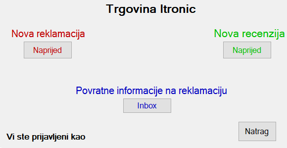

Dobro došli u Izbornik aplikacije Itronic. Prijavljeni ste kao korisnik pod odabranim korisničkim imenom.
U Izborniku imamo četiri opcije.

Korisnik odabire zadani proizvod i ostavlja prigovor ili pohvalu.
Korisnik ima mogućnost pregleda povijest predanih reklamacija.
Korisnik odabire zadani proizvod i ostavlja ocjenu i komentar.
Korisnik ima mogućnost pregleda povijest predanih recenzija.
Korisnik pregledava odgovore administratora na predane reklamacije. Ulazimo u pregled povratnih informacija na pritisak gumba Inbox.
Vraćamo se u glavni prozor za prijavu na pritisak gumba Natrag.